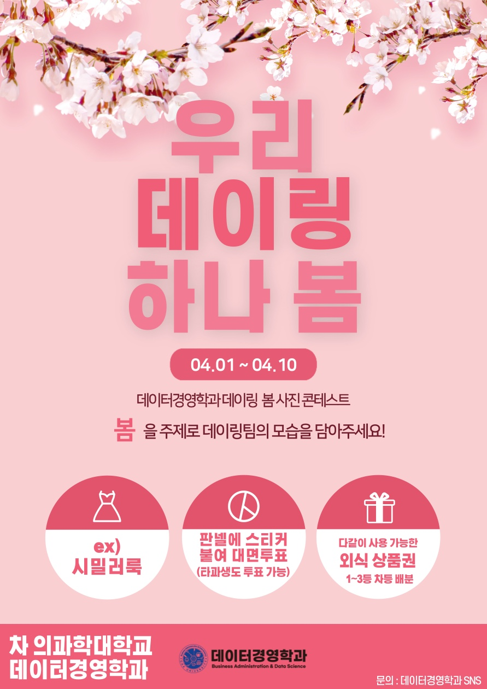
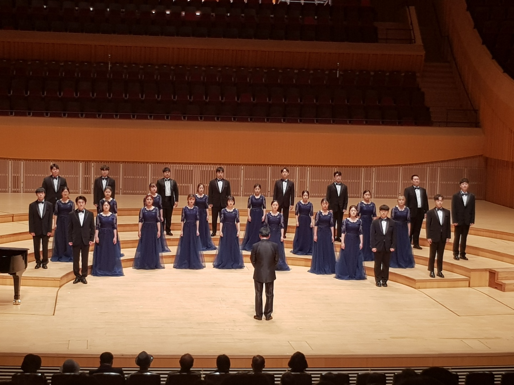
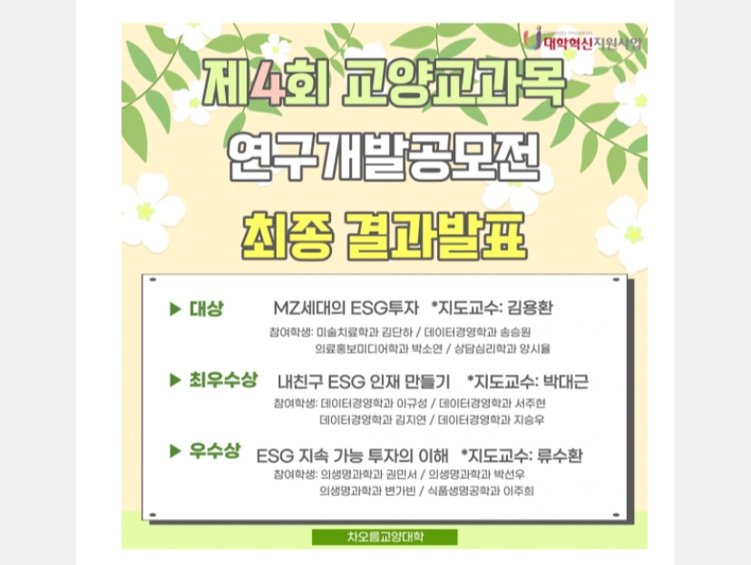
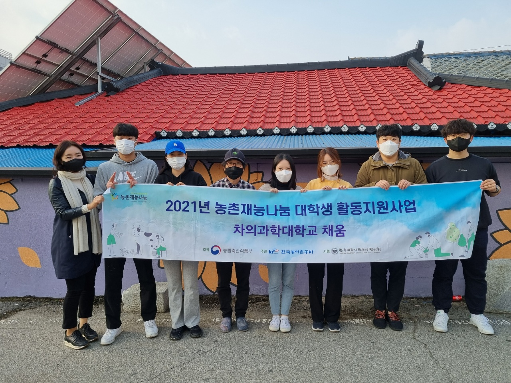
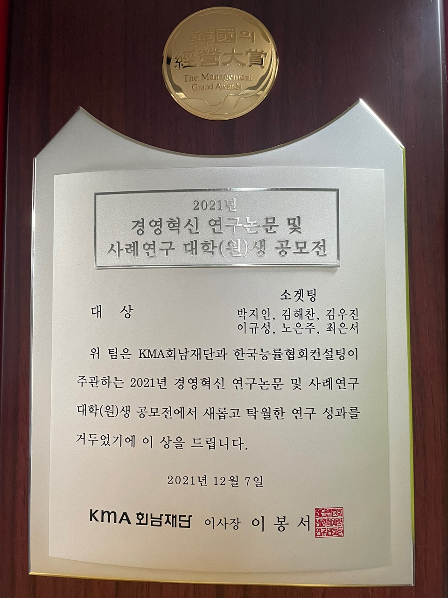

대외활동 및 수상
2024

경영사례개발 & 데이터 분석 대회 2등
차의과학대학교 데이터경영학과 학술대회 2등 수상
2020-2024

차의과학대학교 데이터경영학과 학생회
2020년부터 2024년까지 학생회 활동
2020-2024

차의과학대학교 합창단 차콰이어
2020년부터 2024년까지 소속
2022

경영사례개발 & 데이터 분석 대회 3등
차의과학대학교 데이터경영학과 학술대회 3등 수상
2022

봉사동아리 채움 봉사부단장
2022년 봉사부단장 역임
2022

교양 교과목 연구개발공모전 최우수상
차의과학대학교 제4회 교양 교과목 연구개발공모전에서 최우수상 수상
2021

경영사례개발 & 데이터 분석 대회 1등
차의과학대학교 데이터경영학과 학술대회 1등 수상
2021

봉사동아리 채움 봉사단장
2021년 봉사단장 역임
2021

농촌재능나눔 사업 선정
한국농어촌공사·대사협 주관, "농촌마을 어르신 가구의 마을재생을 위한 벽화그리기" 사업 선정
2021

URP 학생 주도 연구 참여
제17회 경영혁신 연구논문 및 사례연구 대학(원)생 공모전 팀 대상